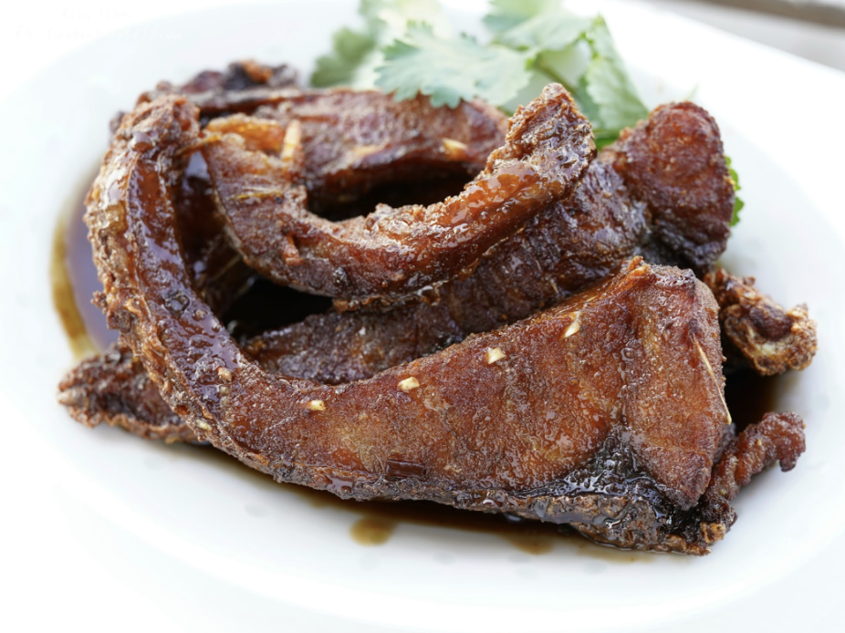
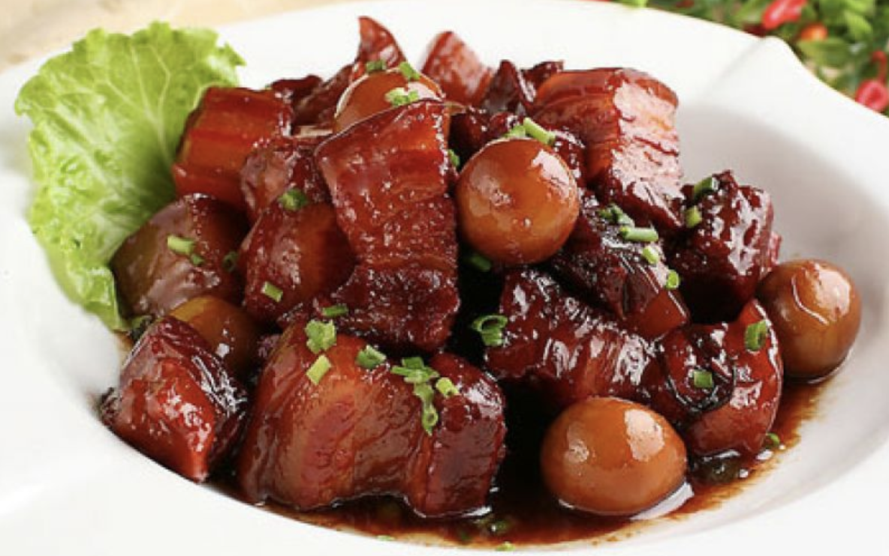

8 pm, Zui Lu - New Shanghai Cuisine (醉庐, zui lu)


The perfect way to end a long day of walking and eating is a comforting homestyle meal. As soon as I walked in, this restaurant immediately felt warm and inviting. I could hear families laughing and talking about their days, and that felt so comforting and inviting. I could also smell a fragrance of food feeling cooked, and the aroma of warm spices filled the air of the restaurant. I immediately knew that I came to the right place to try authentic home cooked food in Shanghai, as I felt like I was stepping into the chef’s own home.
The first food item that caught my eye was a Chinese savory crepe (煎饼果子, jian bing guo zi). I saw the cook cracking fresh eggs, pouring batter, and adding filling right in front of me. I think it was a super cool experience to see my food cooked quickly and efficiently right before my eyes. And the result was a piping hot and fresh street snack that could be readily enjoyed. I think that the crepe was so convenient and delicious, and something I would definitely want to eat every single day. Just seeing the food made on the spot was such a stand out experience, and an easy, accessible, and cheap experience I believe everyone should try out.
I ordered the smoked fish (熏鱼, xun yu) and braised pork belly (红烧肉, hong shao rou). These dishes are authentically characteristic of classic flavors of Shanghai cuisine, and include a sweet and thick sauce full of flavor that coats every bite. This flavor is unique and special to local Shanghai foods. And a taste that you can not leave Shanghai without trying.